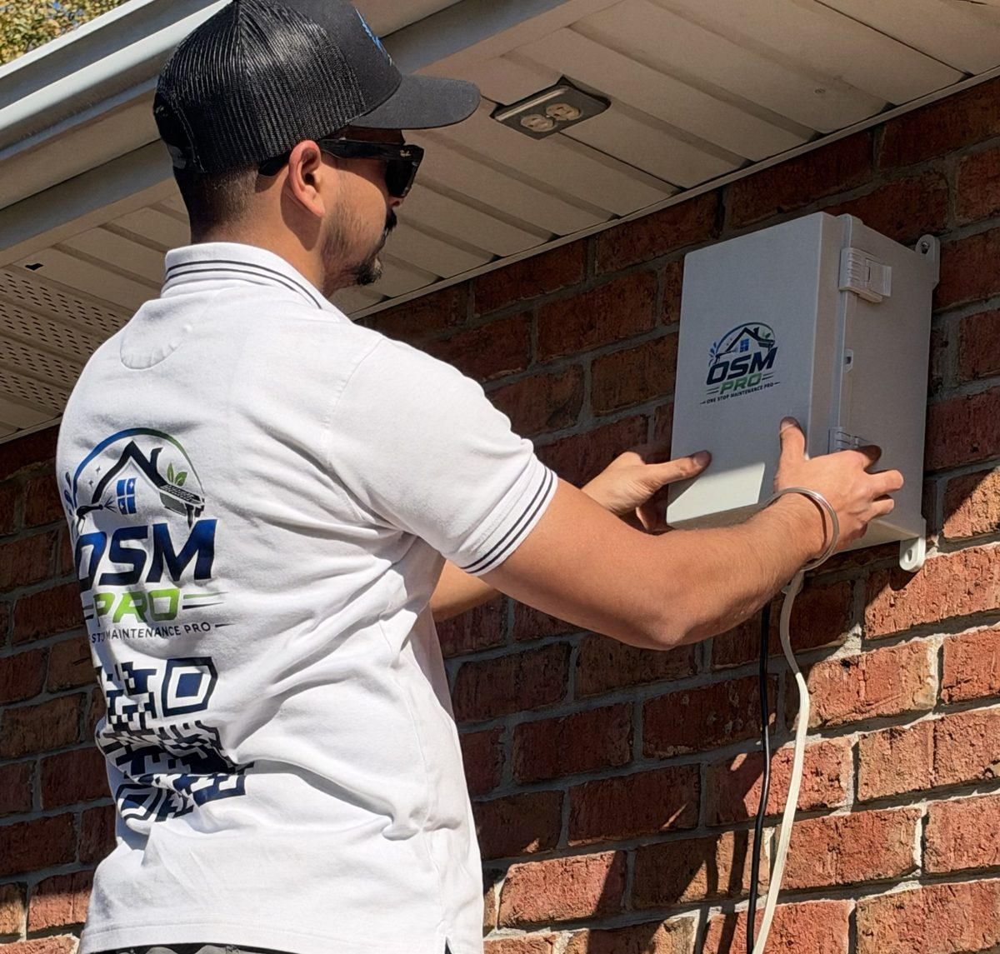

One install. Every holiday. Every night.
Permanent LED lights that disappear into your roofline by day and glow in any colour you choose by night. No ladders, no tangled strands, no taking them down in January.
Try a lighting scene
Tap a scene to see how your roofline could look.
The system we install
Every part is chosen for brightness, longevity and a clean finish.

6 diodes per light
3 RGB and 3 true white diodes give you more brightness, richer colour and a genuinely clean white. UL/cUL listed and IP68 waterproof.

Custom-fit tracks
Every track is made to fit and colour-matched to your soffit. No tape, no bulky clips.

A clean, finished look
Just a neat line of light along your roofline, with no visible wires. Rated for 100,000 hours, over 11 years of continuous use.

Control box and app
A dedicated weatherproof control box, installed by our team. Pick any colour, choose from 1,000+ patterns and set schedules. Away on vacation? Change your lights remotely over WiFi.
Why 6 diodes beat 3
Most permanent lights use 3 diodes per light. Ours use 6, and you can see the difference.

Typical: 3 diodes
- Standard output
- White is blended from the colour diodes, so it can look washed out
- Typically rated for 50,000 hours
OSMPRO: 6 diodes
- 3 RGB + 3 dedicated true white diodes
- More brightness and richer colour separation
- 100,000 hours and a 10-year warranty
Made for the whole year
One system that works every night, not just in December.
Everyday accent
A clean glow on your roofline from sunset, set once on a schedule.
Holidays and events
One tap changes the whole house, with 1,000+ patterns to choose from.
Homes and businesses
Curb appeal that works for any property across the region.
How does OSMPRO compare?
48V power, 6 LEDs per light, a 100,000-hour rating and a 10-year warranty. Pick a brand to see how we stack up.
How it works
Instant estimate
Answer a few questions and see your price range in minutes.
Colour match
We match the track to your soffit or trim.
Install
Most homes are done in a day.
Enjoy
We set up the app with you. Then it’s one tap.
Questions
How long do they last?
The lights are rated for 100,000 hours, more than 11 years of continuous use, and come with a 10-year warranty.
Can I control them when I’m away?
Yes. The app works remotely over WiFi, so you can change colours, patterns and schedules from anywhere.
Will you see wires or tracks?
No wires are visible. The track is matched to your soffit or trim colour, so it blends in during the day.
Are they waterproof?
Yes. The lights are IP68 waterproof and UL/cUL listed, built for Canadian weather.
How much does it cost?
Every property is different. Use our instant estimate for a price range, and we’ll confirm your final price.
Where do you install?
Guelph, Kitchener, Waterloo, Cambridge and surrounding areas.
Backed by OSM Pro
OSMPRO Permanent Lights is the permanent lighting division of OSM Pro, a local property maintenance company. We also handle lawn care, snow removal, pressure washing, window and gutter cleaning, and more.